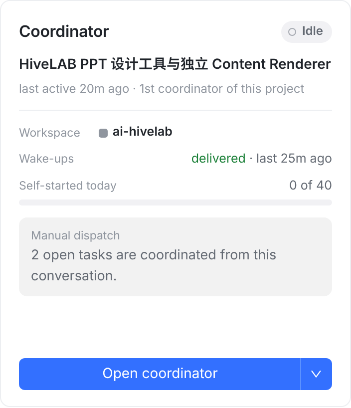
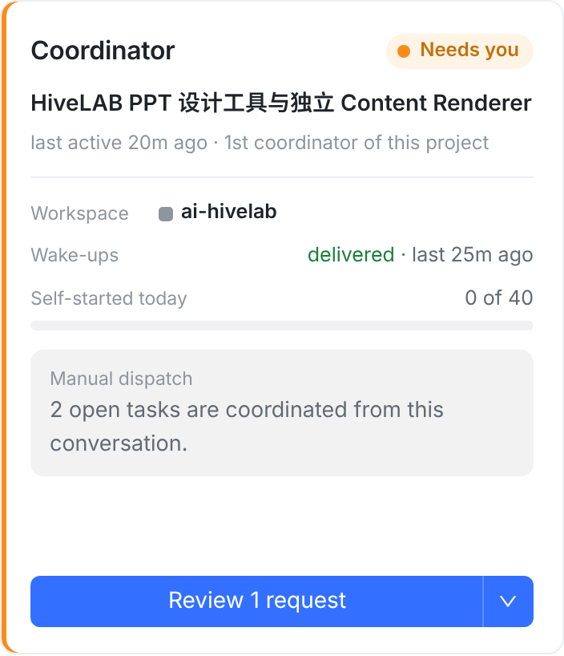
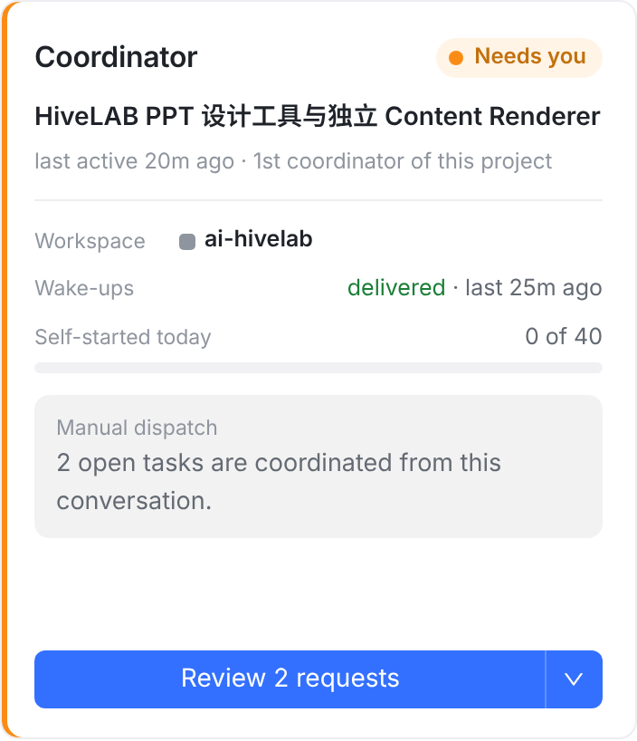
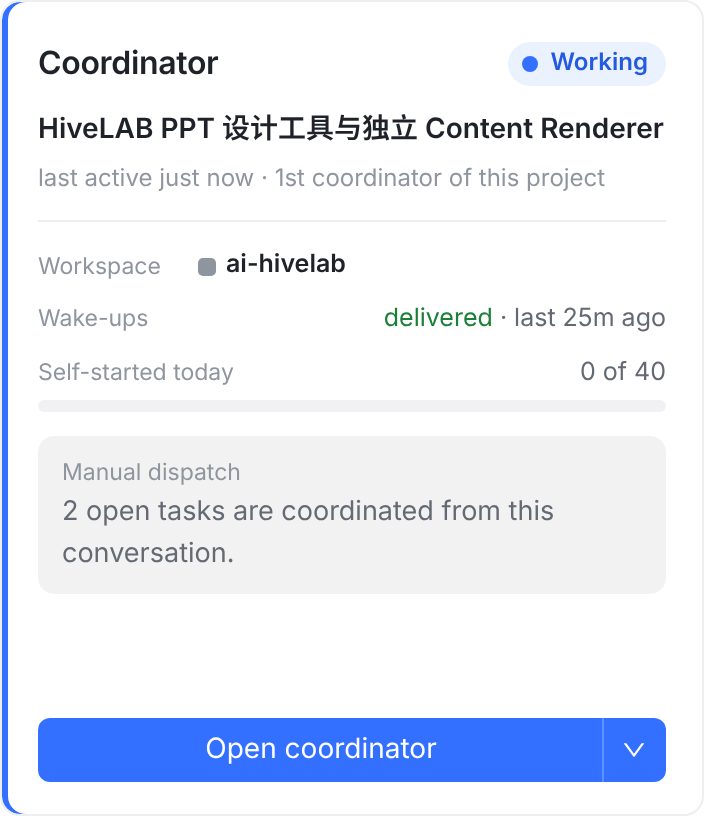

方案 A + B。
A：按钮写按下去会看到什么。有东西等你时写 Review 1 request，其余情况写 Open coordinator。
B：橙色 Needs you 只在真有东西等你时亮；协调者只是这一轮结束、停着等下一条消息时，显示灰色 Idle。
② ③ 是在你 22:24 的截图上直接改的，只动了标出的两处，其余像素没动。新字用 Inter 代替 SF。
ask_owner 的问题要服务端一起改计数才会亮，见 3 号图。
这是用仓库的 ui-migration fixture 跑起来的真实项目页，只替换了协调者状态接口的返回。
改后几列，是把改动真的写进 ProjectCoordinatorCard.tsx 之后拍的。fixture 项目有 2 个 open task，所以灰框里写 2（你截图里是 3）。
Android 的文案和规则与 iPhone 相同，不另画；iPad、macOS 和 iPhone 共用 OrbitKit。




Working + Open coordinator，和今天一样。
按钮按下去都是打开协调者会话，变的只是写什么。蓝底的格子是改动的地方。
| 协调者会话此刻 | 今天：徽标 · 按钮 | 改后：徽标 · 按钮 |
|---|---|---|
| 这一轮结束，没有东西等你（你截图的情况） | Needs youReply to coordinator | IdleOpen coordinator |
| 会话里有审批卡 / 确认卡在等你 | Needs youReply to coordinator | Needs youReview 1 request N 个：Review N requests |
| 它用 ask_owner 问了你，这一轮已结束问题作为 Open item 挂着，你答了才回到它那里。 | Needs youReply to coordinator会亮只是碰巧：它停着等输入。 | Needs youReview 1 request需要服务端一起改计数，见下。 |
| 有归到这个会话的 Open item：升级给你、合并审批、开始 / 关闭请求它可能正在跑，也可能停着。 | 正在跑：WorkingOpen coordinator 停着：Needs youReply to coordinator |
Needs youReview N requests等你的事优先于 Working，和会话列表一样（待你定 ②）。 |
| 正在跑，没有东西等你 | WorkingOpen coordinator | 不变 |
| 排队、失败、被中断、进程已结束 | IdleOpen coordinator | 不变 |
| 会话已完成 | CompletedOpen coordinator | 不变 |
pendingApprovals 今天只数审批卡（countLiveApprovals）。会话列表那一行还会加上归到这个会话的 owner 事项（readOwnerDecisionsBySession）。projects.service.ts 的注释说两边是“同一口径”，其实不是。ask_owner 提问后，这一轮就结束了。今天卡片之所以亮 Needs you，只是因为它停着等输入。如果只改客户端，这时会显示 Idle，问题就被藏起来了。countOwnerDecisionsBySession，和会话列表读同一份数据），两边算出同一个数。字段不变，老版本客户端照常显示，只是数得更全。projects/projects.service.ts（协调者状态的计数）及对应 specProjectPage.swift（徽标规则）、ProjectPageSections.swift（按钮文案）、ProjectsView.swift（把数量传给按钮）ProjectCoordinatorCard.tsx（2 号图就是用这份改动拍的）projects/ProjectPage.kt、ProjectsScreen.ktdocs/project-coordinator-status-contract.md（Needs you 判断表、按钮文案）